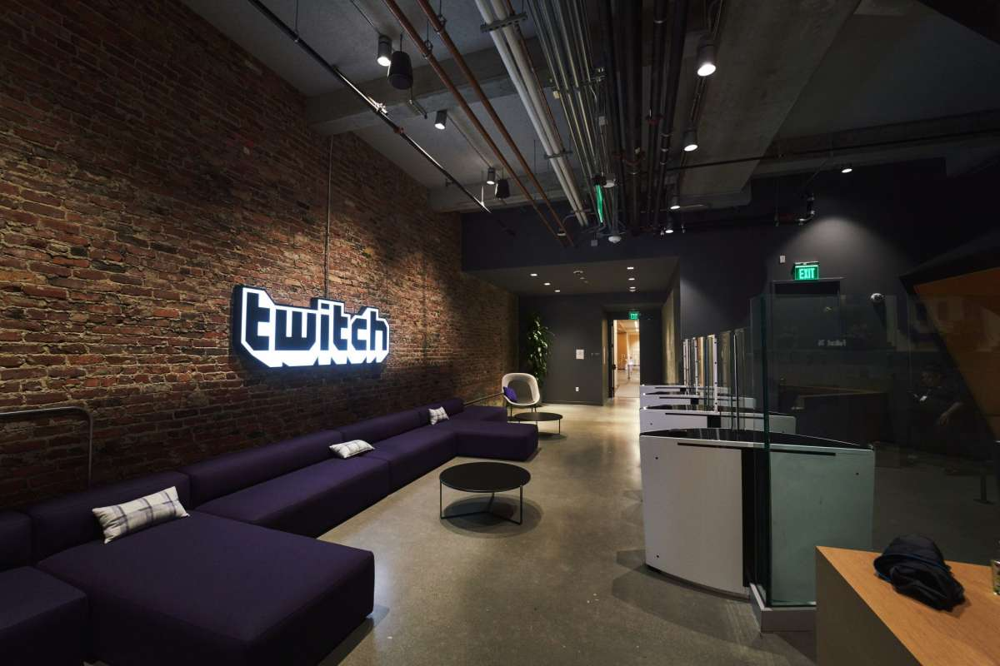
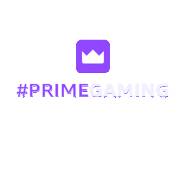

Sur ce site vous trouverez diverses informations pour les streameurs, modérateurs et viewers.

Twitch est un service de streaming, sois vidéo en direct, qui a été lancé le 11 juin 2011.
Le site proposera surtout des Stream de jeux vidéo mais il va se diversifier au fur et a mesure pour proposer d’autres catégories.
Il a été créé pour avoir un site consacré à la branche jeux vidéo de Justin.
TV qui était un site américain fermé en 2014 pour que l’entreprise se concentre plus dans Twitch qui avait en un immense succès.
En 2014 Twitch est racheté par Amazon même si il garde son indépendance et
son siège social à San Francisco aux USA.
Emmett Shear est le cofondateur et dirigeant du site. Twitch compte un peu moins de 6 000 employés.
Twitch permet aux viewers de communiquer avec le streameur via le chat, sois messagerie instantanée, qui permet d’avoir une discussion et réaction en direct des deux parties.
Durant le Stream, plusieurs fonctionnalités seront mises à disposition du viewers et du streameur :
Le viewer paiera à peu près 5 CHF par mois, dont 50% sera reversé aux streameurs affiliés, qui lui donnera
accès aux émoticônes en illimité et sur toutes
les autres chaines Twitch, au chat réservé aux abonnés, à un badge, etc…

Plusieurs niveaux d’abonnements sont possibles, le prix sera plus élevé et donc le streameur touchera plus sur l’abonnement.
Le viewer paiera à peu près 5 CHF par mois, dont 50% sera reversé aux streameurs affiliés, qui lui donnera accès aux émoticônes en illimité et sur toutes les autres chaines Twitch, au chat réservé aux abonnés, à un badge, etc… Plusieurs niveaux d’abonnements sont possibles, le prix sera plus élevé et donc le streameur touchera plus sur l’abonnement.
Sera mis en place par un modo ou par le streameur pour faire participer le chat à une décision grâce aux votes ou la possibilité de gagner des points de chaines en pariant une certaine somme.
Twitch permet de faire des dons aux streameurs affiliés (voir Stream) grâce a des bits, qui est une monnaie virtuelle sécurisée.